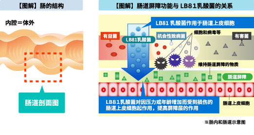
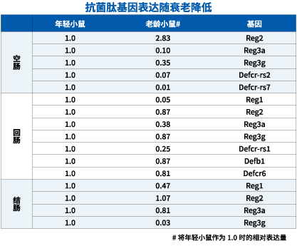
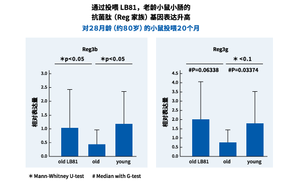
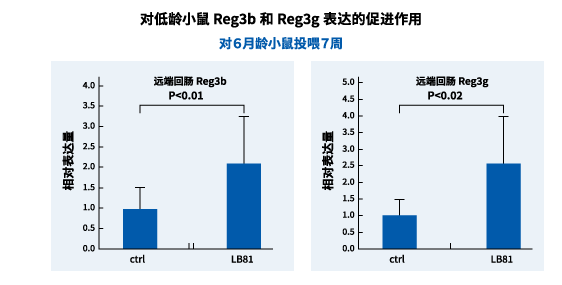
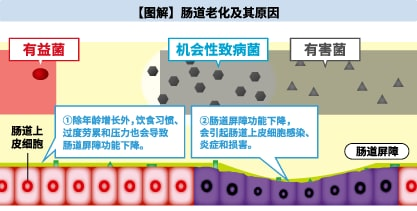
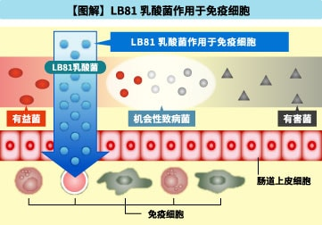

LB81乳酸菌新的可能性
通过与巴斯德研究所的共同研究，确认了LB81乳酸菌的两个新作用。
1. 提高肠上皮细胞的肠道屏障功能
LB81乳酸菌被确认可提高“抗菌肽”的出现，抗菌肽是提高肠道防御能力--屏障功能的重要物质。
作为健康肠道的防御功能，在肠上皮细胞表面具有防止外敌攻击的所谓肠道屏障层。但是现代人的肠道，随着年龄的增长，原本的功能逐渐降低、加上加重消化道负担的不平衡的饮食生活、过度疲劳和不规则生活等所带来的压力，造成巨大的负担。由于这种负担，使肠道功能下降，并导致支撑屏障功能的各种成分减少，肠道屏障的作用就会降低，更容易受到细胞、病原菌和有害物质等的攻击。
研究表明，LB81乳酸菌在由多个成分构成的肠道屏障中，通过增加被认为特别重要的“抗菌肽”成分，可提高肠道屏障的功能。
LB81乳酸菌对因压力和老化而受到损伤的肠上皮细胞起作用，可促进维持肠道本身屏障功能的“抗菌肽”的出现，其维持健康肠道功能的作用为人们所期待。

研究概要
抗菌肽（Reg家族）是从肠上皮细胞产生的，具有保护肠道不受有害细菌、病原菌和有害物质等侵害的功能，还被认为有调节肠道菌群生态平衡的功能。通过对构成屏障功能的多个成分进行的调查，发现这种抗菌肽，与年轻的小鼠相比，在老年小鼠身上的发现率下降。
通过比较食用由LB81乳酸菌制成的酸奶的年长小鼠和不予食用的年长小鼠，再加上年轻小鼠体内的抗菌肽出现率，特别是对Reg3b（β）和Reg3g（γ）的出现有好的影响。有论文发表验证了控制Reg3b发现的小鼠，其大肠炎变得愈加厉害，很难治好，可见该Reg3b可能就是对大肠炎非常重要的抗菌肽。 |
 |
 |

同时，由LB81乳酸菌制成的酸奶经给年轻小鼠服用后，发现与年长的小鼠一样，有促进Reg3b和Reg3g的发现效果，可见不仅能提高增龄的肠道，还能提高年轻肠道的屏障功能。

＜参考资料：【图解】肠道老化及其原因＞
现代人的肠道负担很大。也可以说是长寿大国日本所得到的一个必然的“礼物”，但是，也有“年龄增长”所伴随的功能低下，给消化道增加负担的不平衡的饮食生活，过度疲劳和不规则生活等与身心相关的各种压力等因素。这种负担越大，消化功能和肠道的屏障功能越可能降低，整个肠道的功能就会降低，即加剧肠道的老化。 |
|
 |
2.作用于肠道的免疫细胞
人类的肠道有着适合于各年龄段的自身状态。不断配合适应年龄变化，这就是肠道的恒定性。随着年龄的增加和病原菌等因素的影响，如果不能保持其恒定性，同时其免疫力的恒定性也会下降。
研究是基于以下假设进行的：通过摄取有益于调节有益菌、有害菌、条件致病菌所构成的肠道菌群平衡的LB81乳酸菌后，肠道菌群的恒定性得以适当维持，其结果是免疫力恢复到良好状态。
研究结果表明，作为LB81乳酸菌的新作用，不仅对肠道菌群，也对肠道内的免疫细胞起作用。LB81乳酸菌的作用能够很好地保持免疫细胞的恒定性，对健康起到各种正面的作用。 |
|
 |